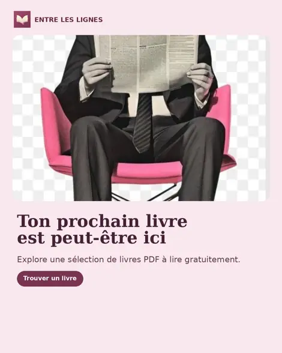
Post Instagram
Explore une sélection de livres PDF à lire gratuitement.
Trouver un livreDes visuels à partager pour faire découvrir la bibliothèque et le carnet de lecture.

Explore une sélection de livres PDF à lire gratuitement.
Trouver un livre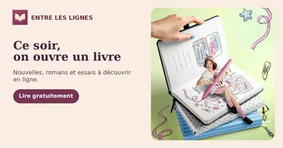
Nouvelles, romans et essais à découvrir en ligne.
Lire gratuitement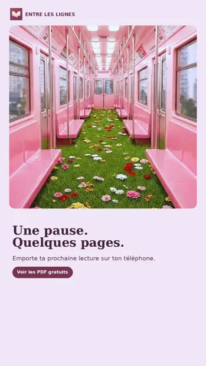
Emporte ta prochaine lecture sur ton téléphone.
Voir les PDF gratuits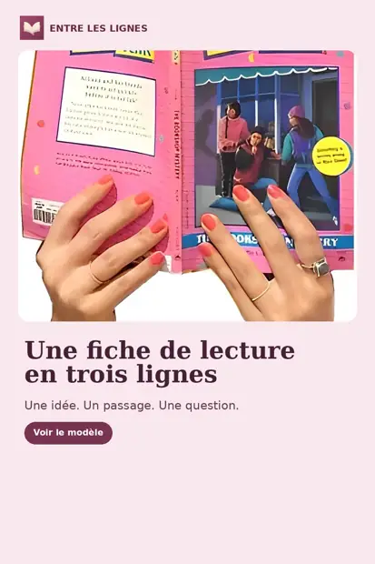
Une idée. Un passage. Une question.
Voir le modèle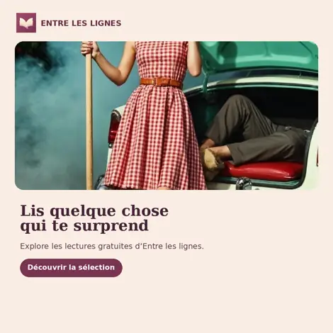
Explore les lectures gratuites d’Entre les lignes.
Découvrir la sélection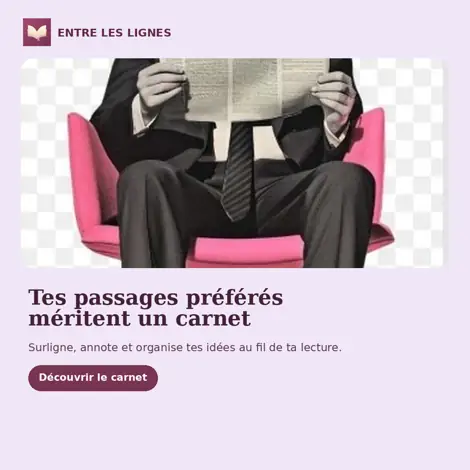
Surligne, annote et organise tes idées au fil de ta lecture.
Découvrir le carnet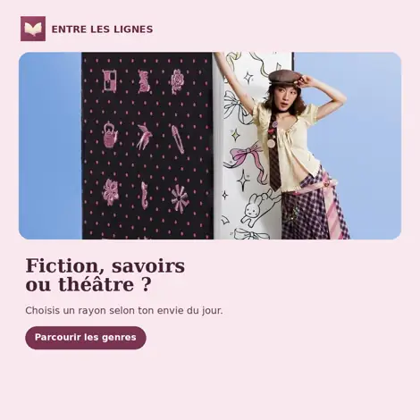
Choisis un rayon selon ton envie du jour.
Parcourir les genres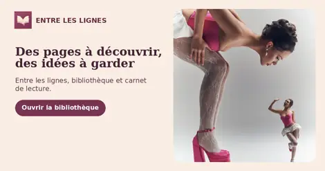
Entre les lignes, bibliothèque et carnet de lecture.
Ouvrir la bibliothèque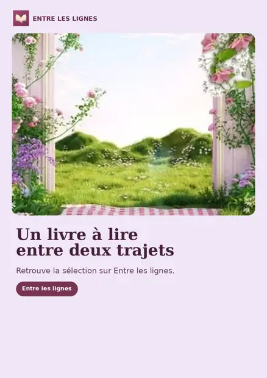
Retrouve la sélection sur Entre les lignes.
Entre les lignes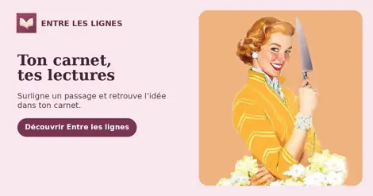
Surligne un passage et retrouve l’idée dans ton carnet.
Découvrir Entre les lignes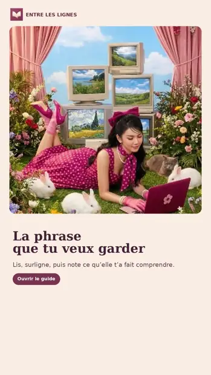
Lis, surligne, puis note ce qu’elle t’a fait comprendre.
Ouvrir le guide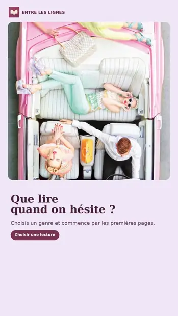
Choisis un genre et commence par les premières pages.
Choisir une lecture